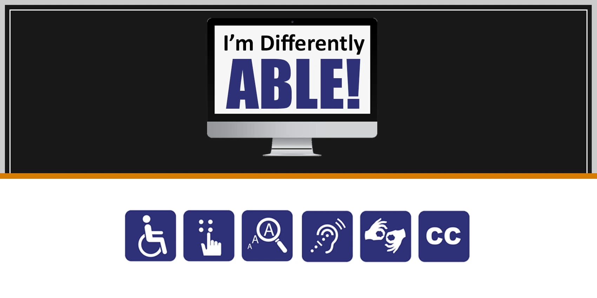

Customer Experience & Accessibility
The customer experience (CX) has become an important part of doing business. Positive customer experience means getting rid of any kind of friction between the customer and the brand. In reality, the customers use all their five senses to experience any brand. Of course, one cannot use all their five senses when they look online, but they can visualise the feel when they visit a website. The website is a digital representation of how business is done in the real world, that means people give as much weight to the website as they give to the brick-and-mortar shop. We need to ensure that both the online and offline presence fits the brand’s future vision. Just like in real life where diverse customers visit the physical brick-and-mortar stores, the customers that access the website are also diverse. People with impaired vision, motor difficulties, cognitive impairments or learning disabilities, deafness and impaired hearing all need to have equal access to the website. One in five people in the UK, around 14.1 million, has some kind of disability.
We need to make sure the website is accessible to different groups of people. The design and content of the website should be clear and simple so that customers using special devices like a screen reader, that helps the user to navigate a website and or special mouse for someone with motor difficulties, can use the website with ease. Other ways we can make the website accessible are, allow users to enlarge font size, reduce cluttered text, keep formatting simple, use headings (Heading 1, Heading 2 and so on) and use appropriate description for images, clear and well-placed actions like place order, browse the menu, etc.
Accessible websites not only work better for everyone, but they are also faster, easier to use and appear on top of the search engine ranking page as well as for AI searches.